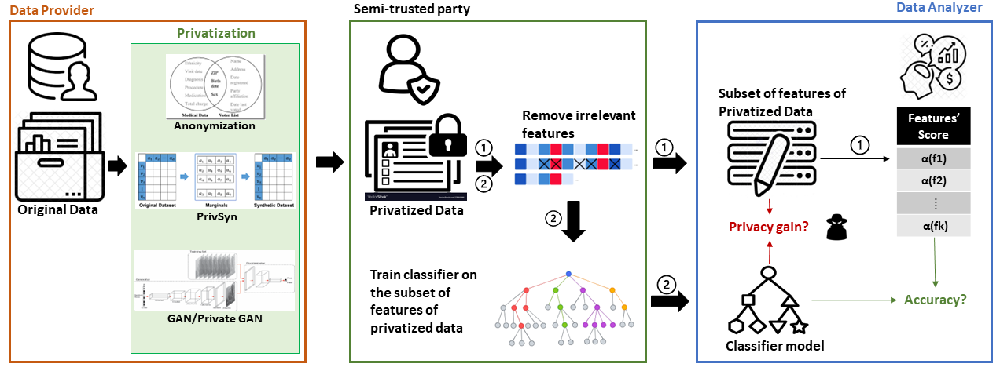
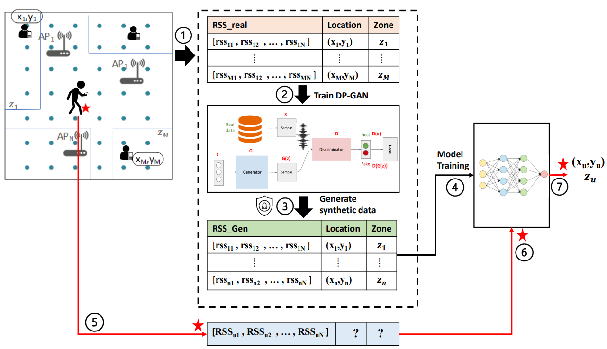
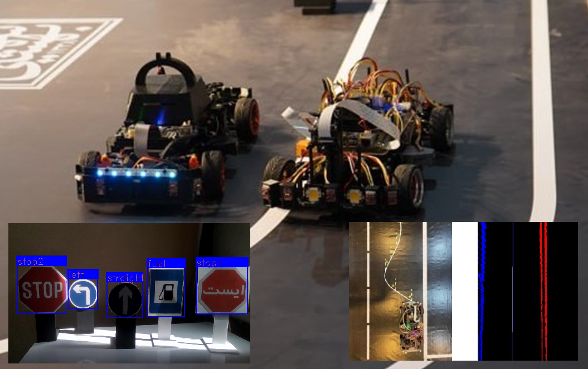
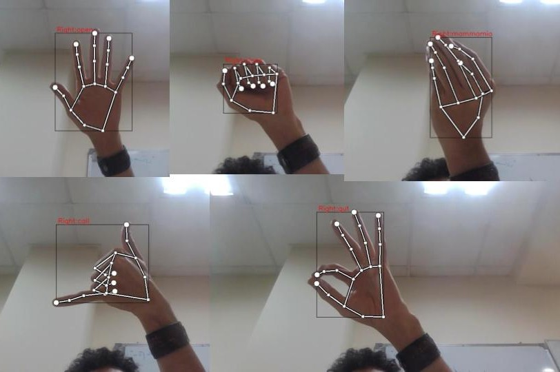
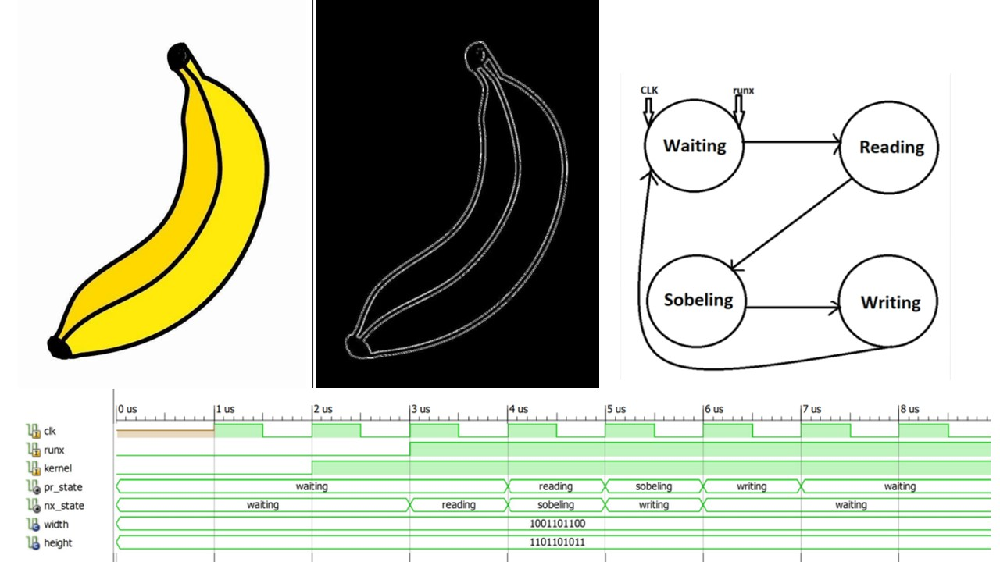
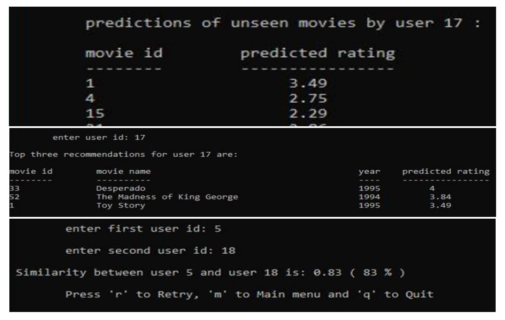

About Me
I am an Engineering student. Having received full undergraduate scholarship, I did my bachelors in Electrical Engineering at Shahid Beheshti University in Tehran, Iran.
Besides a student, I have been a researcher, a teaching assistant, a team member, and a member of RoboCup IranOpen's technical and national committees.
I had the privilege of establishing the Vision division of SBU’s Robotics and Intelligent Automation Lab,
and have been rewarded by the university president and department dean for my contributions to many First place victories of the team in international competitions.
I am extremely enthusiastic about starting my graduate studies.
Publications
|  |
Mutual Impact of Feature Selection and Privacy-preserving Mechanisms, Research Square |
|  |
Differentially Private GANs for Generating Synthetic Indoor Location Data, Arxiv |
Projects
|  |
1:10 Scale Self-Driving Robot Car |
|  |
Face and Hand Gesture Detection |
 |
Image Recovery with Genetic Algorithm |
|  |
Sobel Edge Detection in VHDL |
|  |
Movie Recommendation System |
 |
GAN / Conditional GAN for MNIST Dataset |
|
Ball Balancer Bot |